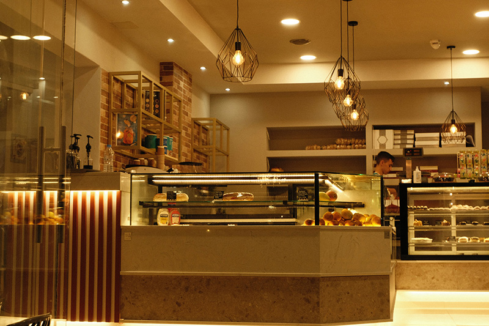

At Bliss Bakery, we believe every bite should be an experience of pure delight. Our mission is to bring joy to our community through the art of baking. With a commitment to quality, creativity, and a love for what we do, we craft our treats to perfection using only the finest ingredients. We strive to bring a touch of bliss into everyday moments with our exceptional pastries and bread. We maintain the highest standards in baking, ensuring that every product is fresh, flavorful, and made with care. As a cherished part of our community, we create a warm, welcoming space where everyone feels at home. We constantly explore new recipes and techniques, blending traditional baking with modern twists to surprise and satisfy our customers. We also practice responsible sourcing and environmentally friendly baking methods, contributing positively to our environment. Join us at Bliss Bakery, where every creation is a testament to our passion for baking and dedication to delighting our customers.
An Invitation
Welcome to Bliss Bakery, your go-to spot for delightful and reliable baked goods! Whether you’re looking for your daily bread, pastries, or treats for special occasions, we’ve got you covered. Families, come find your favorite spot for weekend gatherings and create sweet memories with us. Join us at Bliss Bakery and experience the warmth of our community, one bite at a time.
To All Food Enthusiasts: Indulge your senses with the finest artisanal baked goods at Bliss Bakery. We cater to those who appreciate innovative flavors and constantly seek new culinary experiences.
Bakers and home cooks: Let us inspire you with our techniques and recipes. Discover a world of taste and creativity with us.
Event Planners: Planning a wedding, birthday, or corporate function? Look no further than Bliss Bakery for beautifully presented and delicious baked goods that will make your event unforgettable. Our custom cakes and catering services are designed to impress and delight. Trust us to add that perfect touch of sweetness to your special day.
Health-Conscious Consumers: At Bliss Bakery, we understand the importance of natural, organic, and locally sourced ingredients. We offer various options for dietary needs, including gluten-free, vegan, and other dietary-specific choices. Enjoy our wholesome and delicious treats made with care and sustainability in mind.
Thoughtful Gift Shoppers: Looking for the perfect gift? Bliss Bakery has a selection of delicious and thoughtful options for holidays, special occasions, or simply to show appreciation. Our beautifully packaged treats are sure to bring joy to your loved ones. Make every moment special with a gift from Bliss Bakery.
Join us at Bliss Bakery, where quality, creativity, and community come together to create a truly delightful experience.
We can’t wait to welcome you and share the bliss with you!